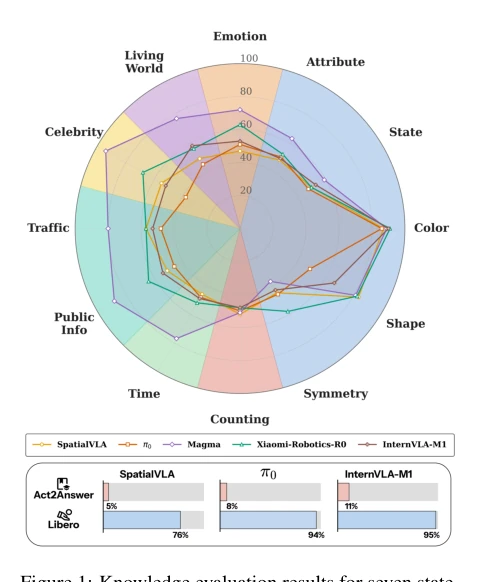
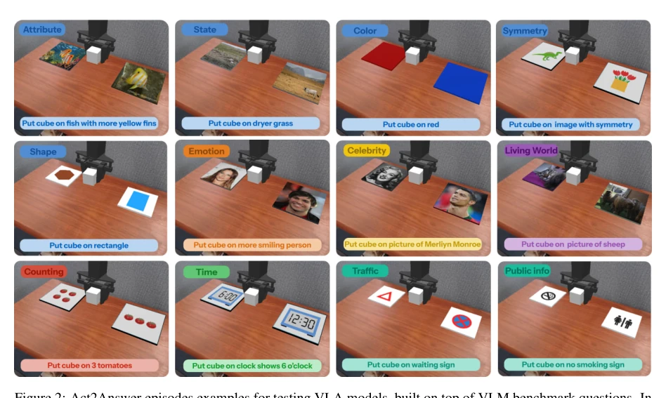
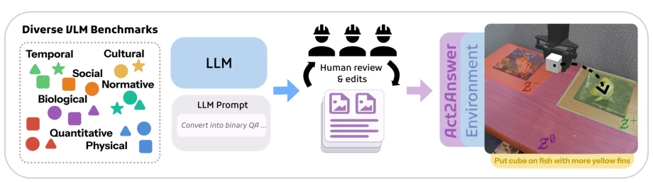
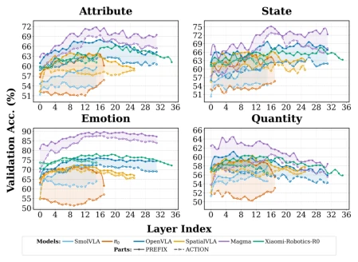
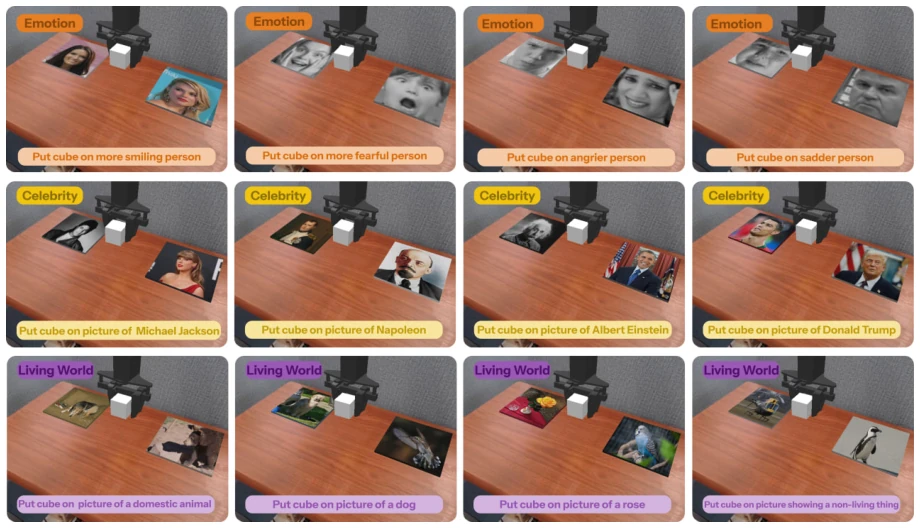
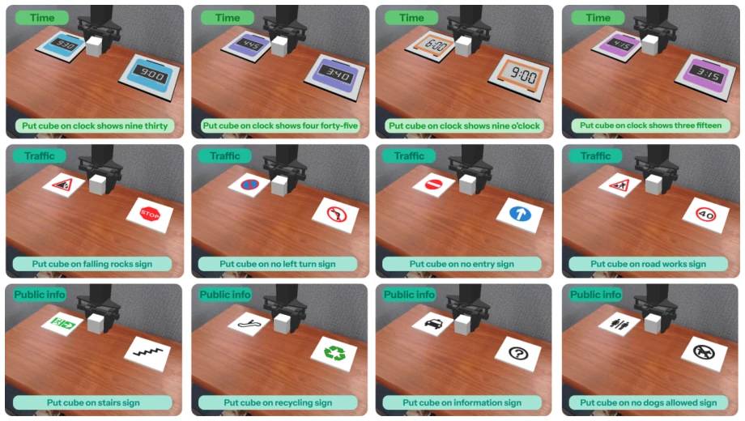
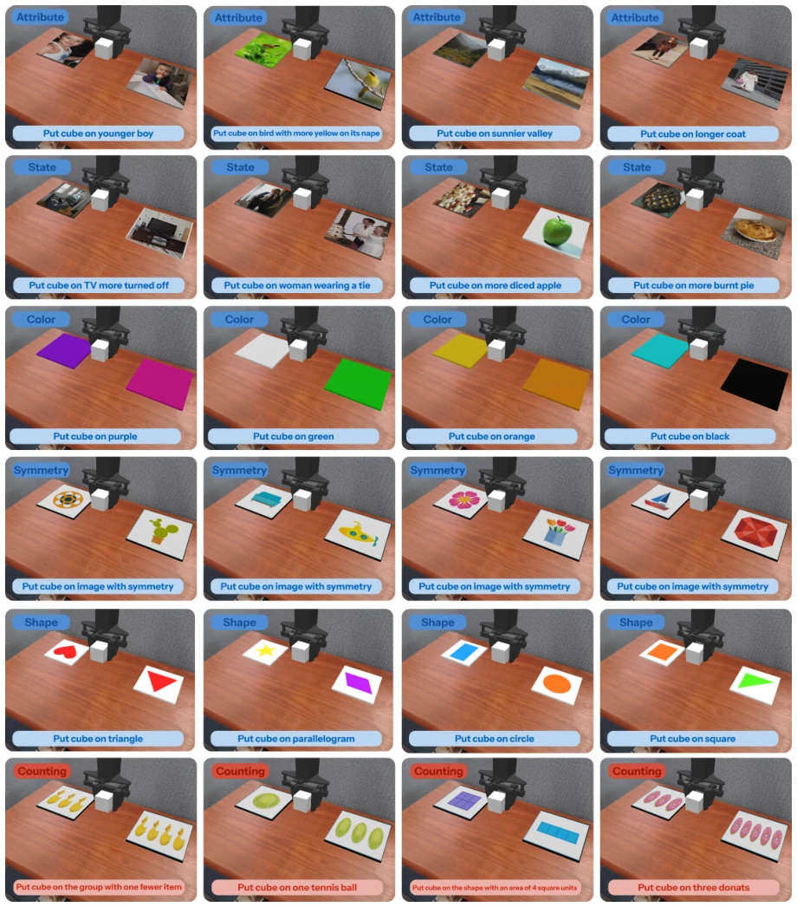

This paper casts a sobering reality check on the enthusiastic VLA community: models claiming "open-world generalization" have actually forgotten even common sense. The authors did not employ fancy long-horizon tasks, but used simple actions like "placing blocks to select answers" to directly test whether VLA still retains knowledge from VLM. The highlight lies in isolating control interference, exposing the significant degradation of VLA in semantic knowledge, especially advanced concepts such as emotion and counting which have nearly regressed to zero. The downside is that the simulation environment is inherently simple, real-world physical interaction was not tested, and "placing blocks" itself may be too simple for certain models, masking some control bottlenecks. However, the strategy of directly quantifying "knowledge forgetting" is indeed more reliable than merely observing success rates, counting as adding a key piece to the VLA evaluation framework, although it has not yet fully resolved the reliability issues of real-world deployment.
研究动机Motivation
当前 VLA 模型多基于 VLM 微调，业界默认其世界知识得以保留，但缺乏系统测量手段。现有基准如 LIBERO (Liu et al., 2023) 和 OpenVLA (Kim et al., 2024) 主要关注操作成功率，混淆了知识缺失与控制失败。若机器人无法区分“脏杯子”与“干净杯子”，仅能抓取，则无法胜任家庭场景。现有工作如 VQA 评测仅测文本生成，无法反映知识是否指导动作。因此，亟需一种能隔离控制干扰、直接评估知识保留与动作落地能力的协议，以揭示微调是否导致灾难性遗忘，避免“能干活但不懂事”的机器人。
Current VLA models are predominantly based on VLM fine-tuning, where the industry assumes world knowledge is preserved, yet lacks systematic measurement methods. Existing benchmarks such as LIBERO (Liu et al., 2023) and OpenVLA (Kim et al., 2024) primarily focus on manipulation success rates, conflating knowledge absence with control failure. If a robot cannot distinguish between a "dirty cup" and a "clean cup" and can only grasp, it cannot fulfill home scenarios. Existing works like VQA evaluation only test text generation, failing to reflect whether knowledge guides action. Therefore, there is an urgent need for a protocol capable of isolating control interference and directly assessing knowledge retention and action execution capability, to reveal whether fine-tuning leads to catastrophic forgetting, avoiding robots that are "capable but ignorant".
Proposes the Act2Answer protocol, converting VLM benchmark questions into embodied action tasks. The pipeline includes: 1) Data construction: Screening 12 categories of common sense questions from VLM benchmarks such as OK-VQA, rewritten by LLM into binary instructions, mapped to candidate images in desktop scenes to ensure visual perceptibility; 2) Action evaluation: The agent must place the block on the correct image, defining a Soft Success Rate tolerance region to reduce control errors and distinguish perception failure from knowledge absence; 3) Intent probing: Training linear classifiers at each layer of the VLM backbone and Action Head, calculating Chance-Normalized Retention to quantify the distribution and decay of answer-related information between layers, comparing signal strength between backbone and action head. The innovation lies in using minimal action (placement) to replace text generation, reducing long-horizon planning interference, and locating the position of knowledge loss through layer probing, rather than merely observing final success rates, thereby distinguishing between "not knowing" and "not being able to do".
Evaluated 7 VLAs (e.g., OpenVLA, π0, Magma) and 9 VLM baselines. Covering 12 knowledge categories (physics, society, culture, etc.), totaling 1720 binary questions. Results found: VLAs performed passably on perception tasks such as color and shape, but were near random guessing on semantic tasks such as emotion, counting, and symmetry, with a 20-40 point gap compared to the source VLM. VQA joint training models (e.g., Magma) performed better. Ablation studies showed that downstream fine-tuning may harm general knowledge. Layer probing indicated that answer information exists in intermediate layers but decays at the action head layer. This confirms that fine-tuning leads to insufficient semantic knowledge retention, and simple control tasks cannot mask knowledge defects.
其他图片Other Figures

Figure 1: Knowledge evaluation results for seven state- of-the-art VLA models across diverse knowledge do- mains on the Act2Answer Task Suite. The bottom panel shows model performance averaged across all environ- ments on both Act2Answer and LIBERO (Liu et al., 2023) (averaging details are provided in Appendix D).

Figure 2: Act2Answer episodes examples for testing VLA models, built on top of VLM benchmark questions. In each episode, the embodied agent must interpret a natural-language instruction and control the robot arm to move the cube onto the correct answer plate.

Figure 3: Overview of the data curation pipeline used to construct the Act2Answer task suite from VLM benchmarks, including selection, filtering and normalization, and conversion

Figure 4: Probing results for internal representations of VLA models on four tasks from the Act2Answer task suite. In the legend, Prefix labels indicate representa- tions from the VLM component, whereas Action labels indicate representations from the Action component.

Figure 5: Additional ACT2ANSWER environment examples from the EMOTION, CELEBRITY, and LIVING WORLD categories.

Figure 6: Additional ACT2ANSWER environment examples from the TIME, TRAFFIC, and PUBLIC INFO categories.

Figure 7: Additional ACT2ANSWER environment examples from the ATTRIBUTE, STATE, COLOR, SYMMETRY, SHAPE, and COUNTING categories.